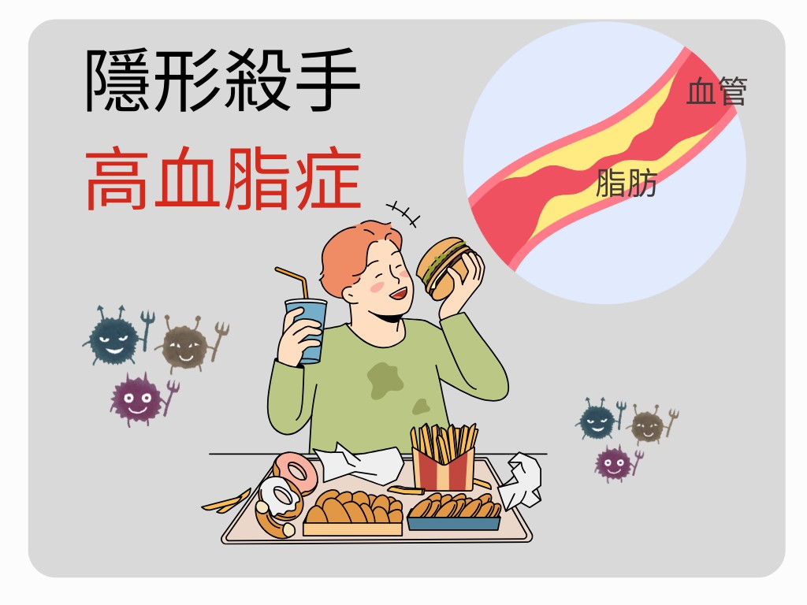
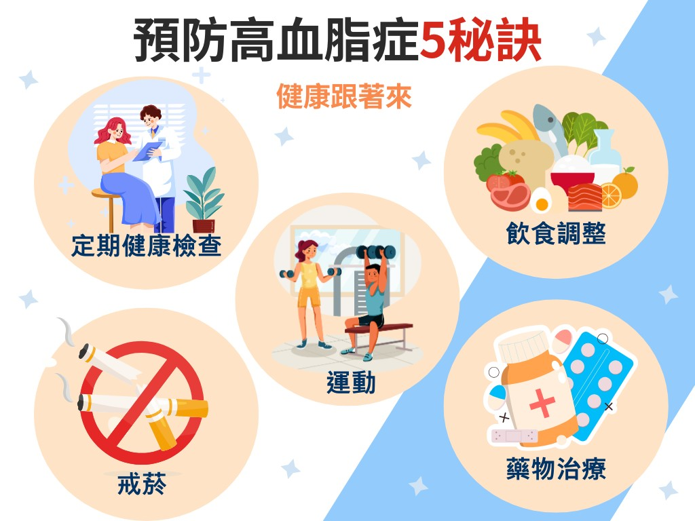

月號－健康大小事
月號－健康大小事根據衛福部112年十大死因統計，心臟疾病與腦血管疾病為國人主要死因，而死於三高（高血壓、高血糖、高血脂）的慢性病人數已超過癌症。根據調查，20歲以上國人中，約30%患有高血脂。高血脂為心血管疾病的危險因子，因初期症狀不明顯且難以自我檢測，進而成為隱形殺手，默默威脅我們的健康。 |
|  |
| 什麼是高血脂症? |
血液中流通之膽固醇或三酸甘油酯之濃度高於正常值時，稱為高血脂症。 |
| 1.膽固醇：主要分為以下兩種 |
･低密度脂蛋白（LDL，俗稱壞膽固醇）：濃度過高，會積在血管壁上，增加動脈硬化及心血管疾病風險。 |
| 2.三酸甘油酯（TG）：濃度過高時，會加速動脈硬化，提高心臟病、中風等疾病風險。 |
| 3.正常值範圍： |
･總膽固醇：＜200 mg/dL |
| 造成高血脂症的原因? |
1. 先天性：遺傳、先天性缺陷症。 |
| 高血脂症的預防與治療： |
| 1.定期健康檢查：追蹤血脂數值及身體狀況。 |
| 2.飲食調整： |
･ 控制脂肪攝取：減少油炸、油煎、油酥食物，注意避免隱形脂肪。 |
| 3.運動：控制體重，定期進行有氧運動，能降低三酸甘油酯並提高好膽固醇（HDL-C）。 |
| 4.戒菸：戒菸有助於改善血脂異常，並降低心血管疾病風險。 |
| 5.藥物治療：若生活方式改變無效，需依照醫師建議服用降血脂藥物。 |
|  |
| 高血脂症患者注意事項： |
| 1.年齡與性別差異：隨著年齡增長，男性與女性的血脂變化會有所不同。年長男性通常較容易出現高膽固醇問題，而女性則在更年期後機率較高。 |
| 2.高血脂症對心血管健康的影響：高血脂會導致膽固醇（尤其是LDL）沉積在血管壁上，使血管變厚、變硬，進而形成動脈粥狀硬化，增加心臟病和中風等心血管疾病的風險。這些沉積物會加劇冠狀動脈疾病的風險，可能引發胸痛、心肌梗塞，影響血液流動，損害心臟功能，進而引發嚴重的心血管事件。 |
| 保健食品也能輔助調節血脂？ |
除了藥物治療，部分經過衛福部認證的健康食品，例如魚油（含EPA、DHA）或紅麴製品，已被證實有助於輔助調節血脂。這些產品會標示「健康食品小綠人」標章，代表通過特定功效的科學實證與安全評估。 然而，並非所有人都適合使用這類保健食品，像是正在服用降血脂藥（如Statin類）若同時服用紅麴產品，可能增加肝臟或肌肉負擔的風險；魚油除降血脂外，其DHA與EPA具抗發炎、抗凝血與壓抑免疫功能，過量或合併抗凝血劑使用，恐增加出血及感染風險。因每個人體質不同，服用後的效果與反應也會有所差異。 建議血脂異常在選用相關健康食品前，可先諮詢醫師或營養師的專業建議，才能更安全、有效地保護健康！ |
資料來源
1.高血脂症-心臟內科-三軍總醫院 |